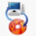
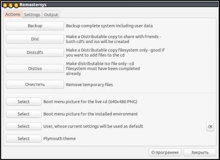
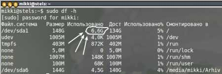

Remastersys.
Создание загрузочного Live CD из установленной Ubuntu.
Автор: admin.
 Remastersys - утилита, которая способна, как бы скопировать вашу существующую систему и уложить в один файл формата «ISO». Если потом, его взять и прожечь на "болванку", то получится загрузочный Live CD диск с вашей системой. Какова цель и предназначение таких загрузочных дисков? Применений может быть несколько, а именно:
1) Полностью настроеная система, с установленными программами, которую можно использовать, как переносную, вставил диск в любой компьютер, загрузился, сделал какие-нибудь срочные дела в привычной для себя среде, выгрузился и пошел гулять дальше. При этом, все настройки, включая пароли пользователей и прочее, полностью сохраняются.
2) Возможность, как бы создавать свой собственный дистрибутив, получив таким образом загрузочный (установочный) диск с вашей собственной, индивидуальной системой. Для этого, берется стандартный дистрибутив с «Ubuntu», удаляется из него все, что только можно и заменяется на свое, включая темы, иконки и прочее... В данном случае, настройки не сохраняются и такой дистрибутив можно устанавливать на другие компьютеры, точно также, как вы это делали используя стандартный оригинальный дистрибутив с «Ubuntu».
3) Еще один вариант, это скорее, как разновидность первых двух, создавать специализированные дистрибутивы, конкретно "заточенные" под определенные нужды, допустим - загрузочный диск для восстановления системы, при помощи установленных в нем программ.
Существует еще одно ошибочное мнение - использование программы в качестве "бэкапера". Другими словами, это полностью первый вариант, который при необходимости можно проинсталлировать по новой, тем самым, восстановив систему. Во-первых, сама идея создавать бэкапы именно таким образом, мягко выражаясь не очень удачная, т.к. при достаточно интенсивной работе, приходится делать по несколько бэкапов в день и каждый раз нужно будет запускать Remastersys, а затем еще прожигать все это на диск, слишком трудоемко и нерационально (лучше использовать специальные утилиты). Во-вторых, не смотря на то, что на таком диске, во время загрузки можно вроде бы выбрать пункт «Установка системы», в действительности же, эта функция фактически не работает и на определенном этапе инсталляции, процесс просто останавливается.
Теперь о самой программе. Утилита может работать, как в консольном режиме, его мы рассматривать не будем, так и в графическом. Для графики, на данный момент существует два интерфейса, один, как бы официальный: оф. сайт, другой альтернативный. Существенной разницы между ними, практически нет. Поэтому, поступим следующим образом, если хотите официальный, то заходите по ссылке и там уже разбирайтесь самостоятельно, в плане его установки, а мы рассмотрим альтернативный вариант, устанавливаем программу:
sudo -i
wget -O - http://www.remastersys.com/ubuntu/remastersys.gpg.key | apt-key add -
sh -c 'echo "deb http://www.remastersys.com/ubuntu precise main" >> /etc/apt/sources.list.d/remastersys.list'
apt-get update && apt-get install remastersys remastersys-gtk -y
После установки, находим программу в меню «Dash» и запускаем ее.

На вкладке «Settings» можно внести изменения в настройки, если хотите, что бы при загрузке отображались нужные вам названия, а если для вас это не существенно, то что бы лишний раз не "париться", просто забудьте про эту вкладку. Теперь об остальном:
Вкладка «Backup» - создает «ISO» файл системы со всеми настройками, включая даже пароль при входе в систему. Стопроцентная копия того, что у вас на компьютере.
Примечание: можно запустить систему с Live CD, установка на жесткий диск - не работает.
Вкладка «Dist» - создает «ISO» файл вашей системы, но без настроек, всю систему надо настраивать, как вы это делаете обычно после установки Ubuntu. Такую систему можно установить на другой компьютер, задав при этом имя пользователя и пароль. Все установленные вами программы, тоже будут присутствовать.
Примечание: работает только режим Live CD, на жесткий диск устанавливаться не хочет.
Вкладка «Distcdfs» - создает только файловую систему.
Вкладка «Distiso» - создает образ файловой системы ISO (может быть выполнен только после Distcdfs).
Две эти вкладки «Distcdfs» + «Distiso» входят в состав вкладки «Dist», а представлены в программе по отдельности, видимо для каких-то вариаций. Тоесть, по большому счету, нас здесь могут заинтересовать только первые две вкладки: «Backup» и «Dist», в зависимости от того, что мы хотим получить в конечном итоге.
Вкладка «Очистить» - полностью удаляет все, что было сделано в программе до этого.
Все оставшиеся вкладки имеют отношение к оформлению и какой-то существенной роли не играют, их можно проигнарировать. Итак, что в конечном итоге мы имеем? Всего две реальных вкладки: «Backup» - полная система с настройками и «Dist» - полная система, но без настроек.
Для создания одного из вариантов системы в виде загрузочного диска, нужно выполнить следующие шаги:
1) Узнать, сколько ваша система занимает места в ГБ. Дело в том, что Remastersys может создать образ и сжать его в формат «ISO» с итоговым размером не более 4 ГБ. А так как, программа особой сообразительностью не отличается, то она не церемонясь, запускает процесс и где-нибудь там, уже под самое окончание, поняв, что она этого сделать не сможет, выдает ошибку. Поэтому, выполняем в терминале:
sudo df -h

На снимке видно, что моя «Ubuntu» занимает 6.6 Гб. Сколько она будет занимать места в сжатом состоянии (ISO)? Вычислить это в абсолютном значении не представляется возможным, но для хоть какой-то ориентации, можно воспользоваться соотношением 1:3. Тоесть, размер сжатого ISO-образа будет примерно 2.2 Гб.
2) Перед началом создания образа, необходимо (желательно) почистить систему от лишнего хлама, зачем собирать в образ ненужный мусор. Для этого воспользуйтесь «Ubuntu Tweak», можно на пару с «Bleachbit».
3) Закройте все приложения и окна, а также, отключитесь от интернета. Это очень важно, в большинстве случаев, создание образа с включенным интернетом, приводит к отрицательному результату. И еще, для тех, кто не знает, отключиться от интернета, это не значит, что нужно выдергивать сетевой провод из компьютера, сделать это можно из системного трея, открыв меню сетевого соединения.
После всего этого, запускаем программу и если вы до этого уже работали с программой, то нажмите на вкладку «Очистить», а потом запускайте сам процесс, нажав на вкладку «Backup» или «Dist», в зависимости от того, что вы хотите. Можно перекурить, если не курите, то сделайте короткую физ. зарядку.
По завершению этой процедуры, в папке /home/remastersys/ будут находиться разные файлы, в т.ч. и нужный нам файл «ISO». Не стоит путать директории, правильный путь к образу в «Nautilus(e)», выглядит так: «Файловая система» → «home» → «remastersys». Важно помнить, что это временная директория и если вы выключите компьютер, то все файлы от туда исчезнут, поэтому, либо доводите все до "конца", либо перетащите эти файлы в другое место, если вам вдруг понадобилось выключить или перезагрузить компьютер.
Следующий шаг, открываете программу для записей дисков, это может быть, например K3b или Brasero и записываете образ на диск. Дальше, в идеале, было бы неплохо проверить записанный диск в виртуальной машине, например «Virtual Box» и если все впорядке, то можно смело вставлять диск в привод и перезгружаться.
Положительные характеристики Remastersys:
Отрицательные характеристики Remastersys:
Параметры:
Язык интерфейса: английский
Лицензия: GNU GPL
Домашняя страница: http://www.geekconnection.org/remastersys/
Проверялось на «Ubuntu» 12.10 Unity (32-bit.).